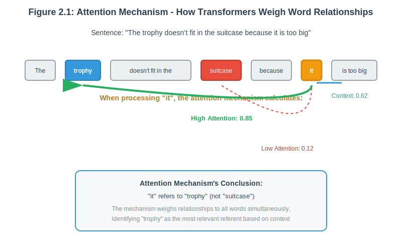
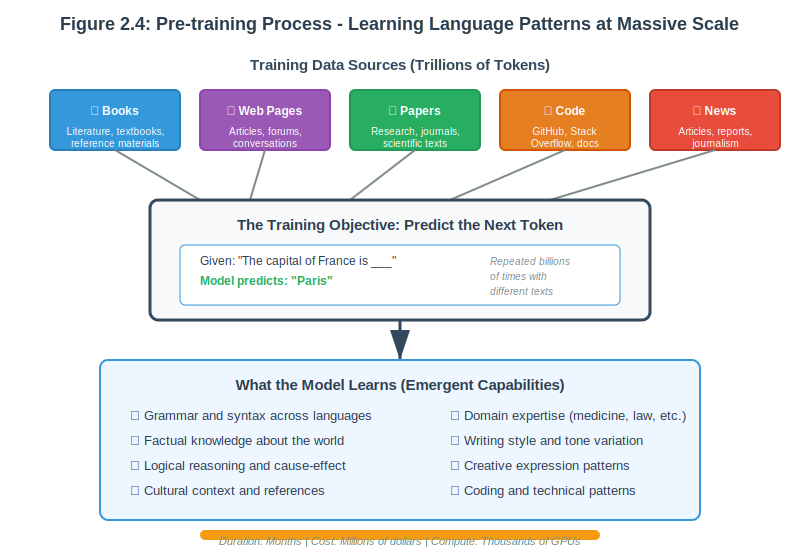
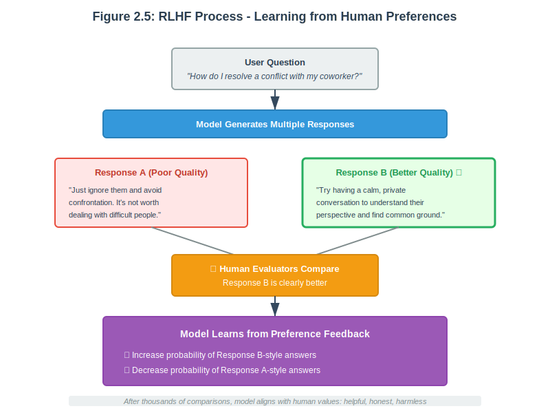
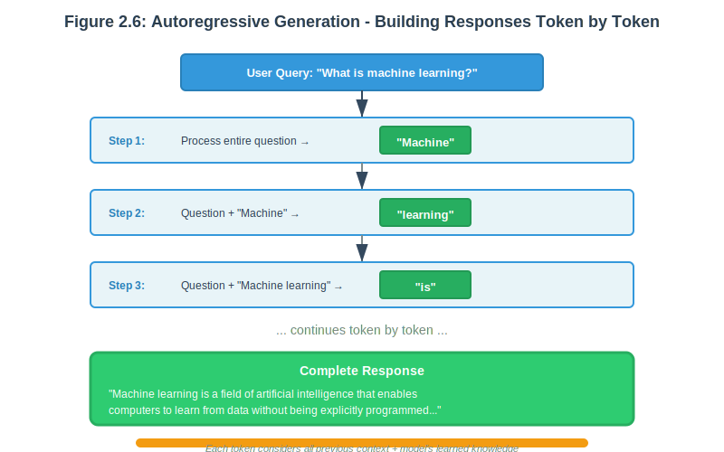
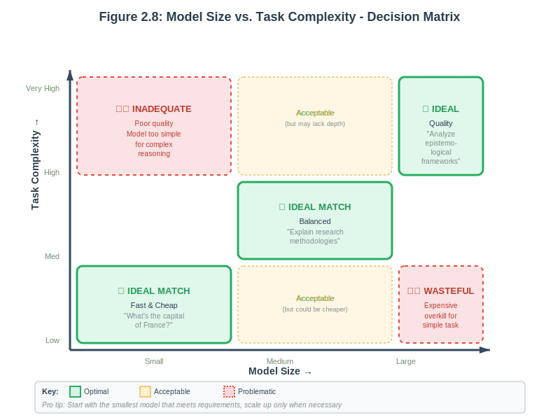

Chapter 2: The Architecture of Understanding
Introduction
Sarah, a data scientist at a healthcare startup, was frustrated. Her AI-powered patient triage system worked brilliantly in testing; it could answer medical questions, understand symptoms, and provide helpful guidance. Then came production day.
Within hours, problems emerged. Simple questions like “What’s a normal temperature?” were taking eight seconds and costing $0.03 each, using the company’s most powerful (and expensive) AI model for what should be instant, cheap answers. Meanwhile, complex diagnostic questions were being routed to the fast but limited model, producing oversimplified responses that missed important nuances.
The monthly API bill projection: $47,000. For 50,000 queries.
Sarah’s CTO was blunt: “We can’t ship this. Figure out what’s wrong or we’re pulling the plug.”
That weekend, Sarah dove into something she’d previously skipped: understanding how these AI models actually worked under the hood. Why were there so many different models? What made GPT-4 cost 20 times more than GPT-3.5 Turbo? How could she tell which model was right for which task?
As she studied transformer architecture, attention mechanisms, and model training processes, everything clicked. The models weren’t mysteriously different, they had fundamentally different designs, training approaches, and capabilities. More importantly, she realized she could build a system that automatically routed each query to the optimal model based on its complexity and requirements.
Monday morning, Sarah deployed her intelligent routing system. Simple queries hit the fast, cheap models. Complex diagnostics went to the powerful ones. Moderate questions found the sweet spot in between.
New monthly cost projection: $8,200. Response times: 90% under 2 seconds. Diagnostic accuracy: actually improved.
Her CTO’s response: “This is why we need to understand our tools, not just use them.”
This chapter is about developing Sarah’s level of understanding, not as an academic exercise, but as practical knowledge that transforms how you build AI applications. You’ll learn why different models exist, how their architecture shapes their capabilities, and most importantly, how to intelligently choose and orchestrate them.
Learning Objectives
By the end of this chapter, you will be able to:
- Explain the transformer architecture and understand why it revolutionized natural language processing
- Distinguish between pre-training, fine-tuning, and inference phases of LLM development
- Analyze the relationship between model size, capability, cost, and performance
- Compare different LLM families (GPT, Claude, Llama) and their specific strengths
- Implement intelligent model selection logic in your research assistant
- Optimize AI applications for cost-effectiveness and performance
- Build systems with caching, fallback strategies, and performance monitoring
Key Terminologies and Concepts
| Term | Definition | Example/Context |
|---|---|---|
| Transformer | The neural network architecture that revolutionized AI, using attention mechanisms to process sequences in parallel rather than sequentially | The “T” in GPT; introduced in 2017’s “Attention Is All You Need” paper |
| Attention Mechanism | A technique that allows models to weigh the importance of different parts of the input when processing each element | When processing “it” in a sentence, attention determines whether “it” refers to “trophy” or “suitcase” |
| Self-Attention | A specific form of attention where the model compares each word to every other word in the same sequence to understand relationships | Analyzing “The animal didn’t cross the street because it was too big” to determine “it” = “animal” |
| Multi-Head Attention | Running multiple attention mechanisms in parallel, each specializing in different types of relationships (syntax, semantics, references) | GPT-3 uses 96 attention heads per layer, each learning different linguistic patterns |
| Encoder | The part of a transformer that processes and understands input, building rich representations | BERT is encoder-only; excels at understanding and classification tasks |
| Decoder | The part of a transformer that generates output based on learned representations | GPT models are decoder-only; specialized for text generation |
| Pre-training | The initial training phase where models learn language patterns from massive datasets by predicting the next token | GPT-3 trained on ~570GB of text over several months |
| Fine-tuning | Additional training on specific tasks or domains after pre-training to specialize the model | Training a general model on medical data to create a healthcare AI assistant |
| RLHF (Reinforcement Learning from Human Feedback) | Training technique where humans compare model outputs and the model learns to produce responses that align with human preferences | Used to make ChatGPT helpful, honest, and harmless by learning from human rankings |
| Inference | The process of using a trained model to generate predictions or outputs | What happens when you send a prompt to ChatGPT and get a response |
| Autoregressive Generation | Building outputs one token at a time, where each new token depends on all previous tokens | “Machine” → “learning” → “is” → “a” → “field…” (each word informed by all previous words) |
| Temperature | A parameter controlling randomness in generation; lower = more deterministic, higher = more creative | Temperature 0.0 for factual answers; 1.0+ for creative writing |
| Parameters | The learned weights in a neural network that determine its behavior; more parameters generally mean more capability | GPT-3: 175 billion parameters; GPT-4: ~1.7 trillion parameters |
| Context Window | The maximum amount of text (in tokens) a model can process in a single interaction | GPT-3.5: 4K tokens (~3K words); Claude 2: 100K tokens (~75K words) |
| Latency | The time between sending a request and receiving the first token of the response | Small models: <1 second; Large models: 5-8 seconds |
| Throughput | The number of tokens or requests a system can process per unit time | Haiku processes ~1000 tokens/second; Opus ~200 tokens/second |
| Model Family | A collection of related models from the same organization, often with different sizes and capabilities | OpenAI GPT family: GPT-3.5 Turbo, GPT-4, GPT-4 Turbo |
| Constitutional AI | Anthropic’s approach to AI safety where models are trained to follow a set of principles (constitution) for helpful, honest, harmless behavior | Claude models use Constitutional AI to refuse harmful requests while remaining helpful |
| Quantization | Reducing model precision (e.g., from 32-bit to 8-bit) to decrease memory usage and increase speed, with minimal quality loss | Running Llama 2 70B in 4-bit quantization to fit on consumer GPUs |
| LoRA (Low-Rank Adaptation) | An efficient fine-tuning technique that updates only small adapter layers instead of all model weights | Fine-tuning a 7B model by updating only 0.1% of parameters |
| Emergent Capabilities | Abilities that appear unexpectedly as models scale up, not explicitly programmed during training | Chain-of-thought reasoning emerged in large models without specific training for it |
| Scaling Laws | Predictable relationships between model size, data size, compute, and performance | Doubling model size typically improves performance by a consistent amount |
| Zero-shot | Model performs a task without any task-specific training or examples | Asking GPT-4 to translate French without providing translation examples |
| Few-shot | Model learns from a small number of examples provided in the prompt | Showing 3 examples of sentiment classification, then asking it to classify new text |
| Prompt Engineering | The practice of carefully crafting inputs to elicit desired outputs from language models | Adding “Let’s think step by step” dramatically improves reasoning performance |
| System Prompt | Instructions that set the model’s behavior, role, or constraints before the conversation begins | “You are a helpful medical assistant. Always cite sources and acknowledge uncertainty.” |
| Hallucination | When a model generates plausible-sounding but factually incorrect information | Confidently stating that a person won an award they never received |
| Model Routing | Intelligently selecting which model to use based on query complexity, cost, and performance requirements | Using Haiku for simple queries, Sonnet for moderate tasks, Opus for complex research |
| Caching | Storing and reusing previous model outputs to reduce cost and latency for repeated or similar queries | Storing FAQ answers to avoid re-generating the same response |
| Fallback Strategy | Having backup models available if the primary model fails or is unavailable | If GPT-4 is rate-limited, automatically switch to Claude Sonnet |
| API (Application Programming Interface) | A standardized way to access model capabilities programmatically | OpenAI’s /v1/chat/completions endpoint for GPT models |
| Batch Processing | Processing multiple requests together for efficiency, trading immediate response for lower cost | Running 1000 document summaries overnight at 50% cost reduction |
| Streaming | Receiving model output token-by-token as it’s generated rather than waiting for completion | ChatGPT showing words appear gradually rather than all at once |
| Rate Limiting | Restrictions on how many requests can be made to an API in a given time period | OpenAI: 10,000 requests per minute for GPT-3.5; 500 for GPT-4 |
Note: Some terms like “token” and “embedding” were introduced in Chapter 1 but are reinforced here in the context of transformer architecture and model operation.
2.1 The Transformer Revolution: Why Everything Changed
Remember your Markov chain generator from Chapter 1? It could predict the next word based on what came immediately before, like remembering the last few words of a conversation but forgetting everything else. This fundamental limitation plagued AI systems for decades.
Then in 2017, a team at Google published a paper with an audacious title: “Attention Is All You Need.” They introduced an architecture so elegant, so powerful, that it sparked the AI revolution we’re experiencing today. That architecture was the transformer.
The Cocktail Party Problem
To understand why transformers matter, imagine you’re at a crowded cocktail party. Dozens of conversations swirl around you, but you’re focused on one person explaining a complex idea:
“The project that we discussed last week, the one about renewable energy, not the transportation initiative, that project needs the budget we talked about allocating, but the timeline Sarah mentioned won’t work because it conflicts with…”
Your brain performs an incredible feat: despite the distance between words, you instantly know that “it” refers to “the project about renewable energy,” not “the budget” or “the timeline.” You understand that “Sarah mentioned” refers back to information from earlier in the sentence. You’re simultaneously tracking multiple threads of meaning, weighing their importance, and assembling them into coherent understanding.
This is exactly what transformers do, and what earlier AI systems couldn’t.
The Sequential Processing Bottleneck
Before transformers, AI systems read text like a person reading a book one letter at a time through a tiny peephole. They processed words sequentially, from left to right, maintaining a “memory” of what came before. But this memory faded with distance, and the system couldn’t look ahead or simultaneously consider relationships between distant words.
Example: Understanding this sentence required multiple skills that sequential systems struggled with:
“The trophy doesn’t fit in the brown suitcase because it is too big.”
What is “it”? The trophy or the suitcase? Understanding requires:
- Tracking both “trophy” and “suitcase” as potential referents
- Understanding that “too big” creates a logical constraint
- Reasoning that if something doesn’t fit because “it” is too big, “it” must be the thing that’s too large for the container
- Concluding “it” refers to “trophy”
Sequential systems often failed this task. They might focus on “suitcase” simply because it appeared more recently.
Enter the Attention Mechanism
The transformer’s breakthrough was self-attention: every word simultaneously considers its relationship with every other word in the passage. Think of it as the difference between:
- Sequential reading: Following a conversation by listening to one word at a time, trying to remember what came before
- Attention-based reading: Having the entire conversation spread out before you, with the ability to instantly identify which parts are relevant to understanding any specific word
When processing “it” in our trophy sentence, the transformer’s attention mechanism:
- Examines all previous words simultaneously
- Calculates relevance scores: How important is each word for understanding “it”?
- “trophy”: 0.85 (high relevance)
- “suitcase”: 0.12 (low relevance)
- “brown”: 0.01 (minimal relevance)
- “big”: 0.62 (contextually relevant)
- Creates a weighted understanding that correctly identifies the referent
 Figure 2.1: Attention Mechanism Visualization - How transformers weigh word relationships
Multi-Head Attention: Multiple Specialists Working Together
But here’s where it gets fascinating. Transformers don’t use just one attention mechanism; they use multiple “attention heads” that can focus on different types of relationships simultaneously.
Imagine instead of one person listening to that cocktail party conversation, you have a team:
- A grammarian tracking subject-verb relationships and sentence structure
- A semanticist identifying meaning connections and topic relationships
- A logician following cause-and-effect chains and reasoning patterns
- A reference specialist tracking what pronouns and phrases refer to
Each specialist focuses on their expertise, then the team collaborates to build complete understanding.
Example: In the sentence “The brilliant researcher who developed the vaccine published her findings”:
- Head 1 (Syntax): “researcher” → “published” (subject-verb)
- Head 2 (Semantics): “vaccine” → “findings” (topic connection)
- Head 3 (References): “her” → “researcher” (pronoun resolution)
- Head 4 (Position): Tracks word order and clause relationships
GPT-3 uses 96 attention heads per layer. Claude uses similar numbers. Each head specializes in different aspects of language understanding.
 Figure 2.2: Multi-Head Attention - Different heads focusing on different relationship types
Figure 2.2: Multi-Head Attention - Different heads focusing on different relationship types
The Complete Transformer Architecture
The transformer isn’t just attention mechanisms, it’s a carefully orchestrated system of components that work together:
1. Token Embeddings: Words as Mathematical Positions
Remember from Chapter 1 how we convert words into numbers? The transformer begins by converting each token into a high-dimensional vector (typically 768 or 1,024 dimensions) that captures its meaning in mathematical space.
Think of embeddings as GPS coordinates for meaning. Just as GPS places every location on Earth into a coordinate system where nearby places have similar coordinates, embeddings place every word into a mathematical space where words with similar meanings cluster together.
2. Positional Encoding: Remembering Order
Since attention looks at all words simultaneously, the transformer needs a way to know that “Dog bites man” is different from “Man bites dog.” Positional encoding adds a unique mathematical signature to each position, ensuring the model knows word order matters.
3. The Processing Stack: Building Understanding Layer by Layer
Modern transformers stack dozens of identical layers (GPT-3 has 96 layers!), each consisting of:
Self-Attention Layer: The multi-head attention mechanism that identifies relevant relationships
Feed-Forward Networks: The “thinking” component that processes the attended information and builds increasingly sophisticated representations
Layer Normalization: Keeps the mathematical values stable as they flow through many layers
Residual Connections: Creates “shortcuts” that allow information to bypass layers, preventing degradation
As information flows through these layers, understanding becomes progressively more sophisticated:
- Layers 1-10: Basic syntax and simple relationships
- Layers 11-40: Complex grammatical structures and semantic relationships
- Layers 41-70: Abstract reasoning and knowledge integration
- Layers 71-96: Sophisticated inference and creative synthesis
 Figure 2.3: Transformer Layer Stack - Progressive sophistication through depth
Figure 2.3: Transformer Layer Stack - Progressive sophistication through depth
Why This Architecture Revolutionized AI
The transformer solved multiple problems that had plagued AI for decades:
1. Parallel Processing: Unlike sequential architectures that had to process words one at a time, transformers can process entire passages simultaneously. This makes training dramatically faster and more efficient.
2. Long-Range Dependencies: Attention mechanisms can connect words regardless of how far apart they appear in the text. The model understands that “The company, which was founded in 1985 and weathered multiple recessions, announced record profits” with equal ease.
3. Scalability: The architecture scales beautifully with more data and computing power. Bigger transformers trained on more data consistently perform better, leading to the scaling laws we’ll explore shortly.
4. Transfer Learning: A transformer pre-trained on general text develops broadly useful language understanding that can be fine-tuned for specific tasks with relatively little additional data.
Connecting to Your Experience
When you compared your Markov chain to GPT responses in Chapter 1, you witnessed the power of this architecture firsthand. Your Markov chain:
- Could only look at the previous 2 words
- Had no understanding of meaning or context
- Couldn’t track references or relationships
- Generated often-incoherent text
The transformer-based models:
- Considered all relationships simultaneously
- Understood context and meaning
- Tracked complex reference chains
- Generated coherent, contextually appropriate responses
This wasn’t magic, it was the attention mechanism and transformer architecture doing exactly what they were designed to do.
The Implications for You as a Developer
Understanding transformer architecture isn’t academic knowledge, it directly informs practical decisions:
Model Selection: When choosing between models, you’re choosing between different implementations of these components. Larger models have more layers, more attention heads, and larger embedding dimensions, which explains both their greater capabilities and their higher computational costs.
Prompt Engineering: Knowing that models use attention helps you structure prompts effectively. The model will automatically identify what’s most relevant, but you can guide it by how you organize information.
Performance Optimization: Understanding that attention operates on all tokens simultaneously explains why context window size affects both capability and cost. Longer contexts mean more tokens for the attention mechanism to process, increasing both computation time and memory requirements.
Looking Ahead
The transformer architecture you’ve just learned about is the foundation for every modern LLM you’ll work with. In the next section, we’ll explore how these architectural components are actually trained to develop the remarkable language capabilities you experienced in Chapter 1.
But first, take a moment to appreciate what you now understand. You’re no longer just a user of AI systems, you understand the fundamental innovation that makes them work. This knowledge will serve you well as we explore model selection, optimization, and orchestration in the sections ahead.
2.2 From Random Weights to Intelligence: The Training Journey
Creating a large language model is like raising a child prodigy who will eventually become a world-class expert. This transformation unfolds in three distinct phases, each serving a crucial purpose. Understanding these phases will help you make intelligent decisions about which models to use for different tasks, and why a newer, smaller model might outperform an older, larger one.
Phase 1: Pre-Training - Building the Foundation
Imagine a brilliant student spending years reading every book in the world’s largest libraries. Not to memorize facts, but to understand how language works, how ideas connect, and how human knowledge is structured. This student reads literature, science textbooks, news articles, poetry, technical manuals, philosophical treatises, and even casual conversations transcribed from across the internet.
This is pre-training, where models learn the fundamental patterns of language.
The Scale of Learning
The numbers are almost incomprehensible:
- Dataset Size: Trillions of tokens, roughly equivalent to millions of full-length books
- Training Duration: Months of continuous training on massive computing clusters
- Computing Power: Thousands of high-end GPUs working in parallel
- Energy Consumption: Equivalent to powering a small city for several months
- Cost: Millions to hundreds of millions of dollars for the largest models
What the training data includes:
- Books from Project Gutenberg and digital libraries
- Academic papers across every field of knowledge
- News articles from thousands of publications
- Web pages containing human knowledge and conversation
- Code repositories showing software patterns
- Reference materials like encyclopedias
The Deceptively Simple Objective
The model’s task sounds almost trivial: predict the next token given all previous tokens.
Given: "The capital of France is..."
Model learns to predict: "Paris"
Given: "To solve this equation, first we need to..."
Model learns to predict: "isolate" or "factor" or "substitute"
Given: "The cat sat on the..."
Model learns to predict: "mat" or "floor" or "chair"But here’s the remarkable thing: to successfully predict the next word across billions of examples, the model must learn:
- Grammar and syntax: Understanding sentence structure across languages
- Factual knowledge: Absorbing information about the world
- Logical reasoning: Following chains of cause and effect
- Cultural context: Understanding references, humor, and social norms
- Domain expertise: Learning specialized knowledge from technical texts
 Figure 2.4: Pre-training Process - Learning language patterns at massive scale
The Emergence of Understanding
After months of training on trillions of words, something remarkable happens. The model doesn’t just learn to complete sentences, it develops what appears to be genuine understanding of:
- Language patterns and grammar across multiple languages
- World knowledge and factual information
- Reasoning capabilities for multi-step problems
- Creative expression and stylistic variation
- Domain expertise across countless fields
This is emergence, capabilities that weren’t explicitly programmed but arose from the interaction of the transformer architecture and massive training data.
Phase 2: Fine-Tuning - From Knowledge to Wisdom
If pre-training creates a knowledgeable but unguided genius, fine-tuning transforms that raw intelligence into a helpful, safe, and capable assistant.
Think of it this way: A brilliant student who has read everything but hasn’t learned how to have conversations, answer questions helpfully, or apply their knowledge appropriately in different contexts. Fine-tuning is like providing mentorship, teaching them not just what they know, but how to share that knowledge effectively.
Supervised Fine-Tuning: Learning to Be Helpful
The model trains on carefully curated examples of high-quality interactions:
Human: "Explain photosynthesis to a 10-year-old"
Ideal Response: "Photosynthesis is like a plant's way of making
food from sunlight! Plants have tiny green parts called chlorophyll
that work like solar panels. They take in sunlight, water from the
soil, and carbon dioxide from the air, then use the sun's energy
to combine them into food (a type of sugar) that helps the plant
grow. Pretty cool that plants can make their own food, right?"Through thousands of these examples, the model learns to:
- Follow instructions accurately
- Adapt communication style to different audiences
- Structure information clearly
- Provide accurate, relevant responses
RLHF: Aligning with Human Values
Perhaps the most fascinating part of modern AI development is Reinforcement Learning from Human Feedback (RLHF). Human evaluators compare different responses and indicate their preferences:
Question: "How do I resolve a conflict with my coworker?"
Response A: "Just ignore them and avoid confrontation."
Response B: "Try having a calm, private conversation to understand
their perspective and find common ground."
Human Feedback: Response B is clearly better, more constructive
and helpful.The model learns from thousands of these preference comparisons, gradually aligning its responses with human values. This teaches the model to be:
- Honest about what it knows and doesn’t know
- Helpful in ways that humans actually find useful
- Harmless by avoiding dangerous or inappropriate content
 Figure 2.5: RLHF Process - Learning from human preferences
Domain Specialization
Some models undergo additional fine-tuning for specialized domains:
- Medical AI: Trained on medical literature and case studies
- Legal AI: Fine-tuned on legal documents and precedents
- Code Generation: Specialized on programming languages
- Scientific Research: Adapted for specific scientific domains
Phase 3: Inference - Intelligence in Action
Once training is complete, we reach the phase you’re most familiar with, using the trained model to generate responses. This is what happened every time you queried your research assistant in Chapter 1.
Autoregressive Generation: One Word at a Time
Despite appearing instantaneous, the model actually generates responses one token at a time, each decision informed by everything that came before:
User asks: "What is machine learning?"
Token 1: Model considers entire question → generates "Machine"
Token 2: Considers question + "Machine" → generates "learning"
Token 3: Considers all previous context → generates "is"
Token 4: Building the response → generates "a"
...continues until a complete response is formedWhy this works so well:
- Each token generation benefits from the model’s vast pre-trained knowledge
- The context of your specific question guides generation
- All previously generated tokens inform the next choice
- Fine-tuning ensures responses are helpful and accurate
 Figure 2.6: Autoregressive Generation - Building responses token by token
The Temperature Dial: Balancing Creativity and Consistency
Remember the temperature parameter from Chapter 1? It controls how the model samples from its predictions:
Low Temperature (0.1-0.3): Conservative, predictable
Query: "The weather today is..."
Response: "sunny and pleasant."Medium Temperature (0.7-0.9): Balanced creativity
Query: "The weather today is..."
Response: "exceptionally beautiful with clear skies and a gentle breeze."High Temperature (1.0+): Creative but potentially erratic
Query: "The weather today is..."
Response: "dancing with golden warmth and cheerful brightness that makes
everything sparkle."For your research assistant, you’ll typically want moderate temperature for balanced, helpful responses.
Why Understanding These Phases Matters
This knowledge directly informs practical decisions you’ll make as an AI developer:
Model Selection: Newer models with better fine-tuning often outperform older models, even if the older models are larger. A well-fine-tuned 13B parameter model might produce better results than a poorly-fine-tuned 70B model.
Cost Optimization: Understanding inference costs helps you choose between different model sizes for different tasks. Simple queries don’t need the most expensive models.
Performance Expectations: Knowing how models are trained helps you understand their capabilities and limitations. Models can’t reliably answer questions about events after their training cutoff, for instance.
Customization Decisions: Understanding fine-tuning helps you decide when to use existing models versus training custom variants (which we’ll explore in Chapter 6).
Connecting to Your Research Assistant
As you enhance your research assistant with intelligent model selection in this chapter’s project, you’ll make decisions informed by this understanding:
- Why certain models excel at creative tasks (different fine-tuning approaches)
- Why some are faster than others (architectural and size differences)
- How to balance capability with cost (understanding the relationship between model size and performance)
The three phases you’ve just learned about explain not just how LLMs are built, but why different models have different strengths, knowledge that will make you a much more effective AI application developer.
2.3 The Size Question: Parameters, Performance, and Practicality
Choosing the right model size is like deciding between a Swiss Army knife, a well-equipped workshop, and a fully-staffed research laboratory. Each has its place, and choosing wisely can mean the difference between an efficient solution and an expensive mistake.
When we talk about model “size,” we’re primarily referring to the number of parameters, the mathematical weights that the model uses to process information. Think of parameters as the model’s “brain cells”: more parameters generally mean more capacity for knowledge and sophisticated reasoning, but they also require more computational power and time.
The Three Categories: Small, Medium, and Large
Let me tell you about three companies that learned the importance of matching model size to task complexity:
Small Models (1B-7B parameters): The Swift Specialists
TechSupport Inc.’s Story:
TechSupport Inc. handles 50,000 customer service inquiries daily. Initially, they routed everything through GPT-4, their “smartest” option. Monthly cost: $42,000. Average response time: 6 seconds.
Then their engineer, Maria, had an insight: “Why are we using our most powerful model to answer ‘What’s your return policy?’ when a small, fast model could handle that perfectly?”
They implemented a small model (Llama 2 7B) for simple queries:
- Response time: 0.8 seconds (87% faster)
- Cost per query: $0.0002 (99% cheaper)
- Accuracy: Actually improved for simple questions (the model didn’t overthink)
Monthly cost for 70% of queries: $2,800. Monthly savings: $29,400.
When Small Models Excel:
- Customer service chatbots: “Hi! How can I help you today?”
- Content classification: Sorting emails, categorizing support tickets
- Real-time applications: Mobile app features, live chat assistance
- High-volume processing: Analyzing thousands of documents
The Trade-offs:
- Limited reasoning ability (struggle with multi-step logic)
- Smaller knowledge base (may miss nuanced facts)
- Simpler language patterns (less sophisticated writing)
- Shorter context windows (often work with less text)
 Figure 2.7: Small vs. Large Model Performance Comparison
Figure 2.7: Small vs. Large Model Performance Comparison
Medium Models (13B-34B parameters): The Balanced Performers
ContentCraft’s Story:
ContentCraft creates marketing copy for clients. They started with small models (too simple) and large models (too expensive). Their breakthrough came with medium models:
Claude 3 Sonnet provided the perfect balance:
- Quality: Professional writing that satisfied clients
- Speed: 3-second responses kept writers productive
- Cost: $0.003 per query, sustainable at scale
- Versatility: Handled both creative and analytical tasks well
Their head of engineering explained: “We were using a sledgehammer to hang pictures and a screwdriver to tear down walls. Medium models are the right tool for most jobs.”
Ideal Use Cases:
- Content generation: Blog posts, marketing copy, documentation
- Code assistance: Helping developers with completion and debugging
- Educational applications: Tutoring systems with explanation
- Research synthesis: Summarizing papers and extracting insights
The Sweet Spot: Medium models often provide 80% of large model capability at 20% of the cost, making them the practical choice for most business applications.
Large Models (70B+ parameters): The Heavy Hitters
MedicalAI Research’s Story:
MedicalAI built a diagnostic assistance tool for rare diseases. They initially tried medium models to save costs. The results were concerning, subtle diagnostic nuances were missed, and complex medical reasoning often fell short.
Switching to GPT-4 and Claude 3 Opus changed everything:
- Diagnostic accuracy: Improved by 34%
- Complex reasoning: Successfully handled multi-system analysis
- Research synthesis: Connected insights across hundreds of papers
- Specialist-level insights: Matched expert physician analysis
The cost was 10x higher, but for this high-stakes application, the superior performance justified every penny.
When Large Models Shine:
- Complex research and analysis: Multi-faceted problems requiring sophisticated reasoning
- Strategic work: Business planning, technical architecture decisions
- High-stakes decisions: Medical, legal, or financial applications where accuracy is critical
- Advanced creative tasks: High-quality writing, complex code generation
The Premium Price Tag: Large models cost 10-100x more than smaller alternatives, but for high-value tasks, their superior capabilities justify the expense.
 Figure 2.8: Model Size vs. Task Complexity Decision Matrix
The Scaling Laws: What We’ve Learned About Size
Research has revealed fascinating patterns about how model performance scales with size:
1. Predictable Improvement: Model performance improves predictably with scale, double the parameters and training data, and performance improves by a consistent amount.
2. Emergent Abilities: At certain scale thresholds, new capabilities suddenly appear. Models around 100B parameters start showing abilities that smaller models simply don’t have:
- Complex multi-step reasoning
- Sophisticated code generation
- Advanced creative synthesis
- Nuanced instruction following
3. Diminishing Returns: Each doubling in size provides smaller improvement gains. Going from 7B to 70B parameters provides massive gains. Going from 175B to 350B provides more modest improvements.
Making the Right Choice: A Decision Framework
Ask yourself these key questions:
Complexity: Does this task require sophisticated reasoning or simple pattern matching?
- Simple factual query → Small model
- Moderate analysis → Medium model
- Complex research → Large model
Speed Requirements: Do you need instant responses or can you wait?
- Real-time (< 1 second) → Small model
- Interactive (< 3 seconds) → Medium model
- Batch processing → Any model (optimize for cost)
Volume: How many queries will you process?
- Thousands per day → Prioritize cost (smaller models)
- Hundreds per day → Balance capability and cost (medium models)
- Dozens per day → Can afford quality (large models)
Quality Bar: Is “good enough” sufficient, or do you need exceptional results?
- Acceptable quality → Smaller models
- Professional quality → Medium models
- Excellence required → Large models
Real-World Example: Your Research Assistant
Let’s apply this framework to typical queries your research assistant might receive:
Query 1: “What is the capital of France?”
- Best Choice: Small model (Claude 3 Haiku or GPT-3.5 Turbo)
- Reasoning: Simple factual query, any model knows this
- Estimated Cost: $0.0001
- Response Time: < 1 second
Query 2: “Explain the main methodologies used in qualitative research”
- Best Choice: Medium model (Claude 3 Sonnet)
- Reasoning: Requires structured explanation and domain knowledge
- Estimated Cost: $0.003
- Response Time: 2-3 seconds
Query 3: “Compare and contrast the epistemological foundations of positivist and interpretivist research paradigms”
- Best Choice: Large model (GPT-4 or Claude 3 Opus)
- Reasoning: Requires sophisticated understanding and nuanced analysis
- Estimated Cost: $0.02
- Response Time: 5-7 seconds
The Future of Model Selection
The landscape is rapidly evolving with exciting new approaches:
Mixture of Experts (MoE): Models that activate only relevant parts for each query, providing large model capabilities at medium model costs.
Dynamic Routing: Systems that automatically choose between models based on query characteristics (exactly what you’ll build in the hands-on project!)
Specialized Models: Domain-specific models optimized for particular tasks (medical, legal, code generation).
Key Takeaways
Start Small: Begin with the smallest model that meets your needs, then scale up only when necessary.
Measure Everything: Track both quality and cost metrics to make data-driven decisions.
Think Total Cost: Include development time, infrastructure, and operational costs, not just per-query pricing.
Plan for Scale: A model that works for 100 queries per day might not be optimal for 10,000.
Stay Flexible: The ability to switch between models based on demand and budget is often more valuable than committing to a single approach.
Understanding these trade-offs isn’t just about choosing models, it’s about building sustainable, efficient AI applications that deliver real value without breaking the budget.
2.4 Meeting the Model Families: A Guide to the AI Landscape
Choosing the right LLM for your application is like assembling a team of specialists, each with unique strengths, personalities, and areas of expertise. Let’s meet the major families and learn when to call on each one.
OpenAI GPT Family: The Versatile Pioneers
OpenAI’s GPT family represents the models that brought generative AI into mainstream consciousness. They’re like the established consulting firm with a proven track record and broad expertise across many domains.
GPT-3.5 Turbo: The Reliable Workhorse
Personality: The experienced professional who gets things done efficiently and accurately, without unnecessary complications or expense.
Strengths:
- Exceptional speed: Responses typically arrive in 1-3 seconds
- Cost-effective: Roughly 10x cheaper than GPT-4 for most tasks
- Broad competency: Handles writing, analysis, coding, and conversation well
- Reliable performance: Consistent quality across different query types
When to Choose It: When you need reliable, fast responses for straightforward tasks and cost efficiency matters. It’s the default choice for many production applications.
Real-World Example: A customer service chatbot handling common inquiries would use GPT-3.5 Turbo for 80% of queries, reserving more expensive models for complex cases.
GPT-4: The Strategic Advisor
Personality: The senior consultant you bring in for your most challenging problems, more expensive, but capable of insights that justify the premium.
Strengths:
- Superior reasoning: Excels at complex logical problems and multi-step analysis
- Multimodal capabilities: Can analyze images, charts, and diagrams alongside text
- Nuanced understanding: Better at context, subtext, and sophisticated communication
- Creative excellence: Produces higher-quality creative writing and original content
When to Choose It: When the quality of output justifies the higher cost (typically 10-20x more expensive than GPT-3.5 Turbo), or when you need capabilities like vision that smaller models don’t provide.
Real-World Example: An architecture firm uses GPT-4 to analyze building plans and regulations, justify design decisions, and generate detailed specifications, tasks where the superior reasoning and multimodal capabilities are essential.
Anthropic Claude Family: The Thoughtful Analysts
Anthropic’s Claude models are like the consulting firm known for their methodical approach, ethical considerations, and particularly strong analytical capabilities.
Claude 3 Haiku: The Swift Analyst
Personality: The junior analyst who’s incredibly quick and efficient, perfect for routine tasks that need to be done well but don’t require senior-level expertise.
Best For:
- High-volume processing (customer support, content moderation)
- Real-time applications (chat interfaces, mobile apps)
- Cost-sensitive deployments with tight budget constraints
Notable Feature: Often faster than GPT-3.5 Turbo while maintaining solid performance, making it ideal for applications where every millisecond counts.
Claude 3 Sonnet: The Balanced Professional
Personality: The well-rounded consultant who provides the sweet spot between capability and cost, your go-to choice for most professional applications.
Particularly Strong At:
- Professional writing: Reports, proposals, business communication
- Research assistance: Literature reviews, data analysis, synthesis
- Code analysis: Understanding and improving existing code
- Clear explanations: Breaking down complex concepts
When to Choose It: For tasks requiring more sophistication than Haiku can provide but not necessarily demanding the premium capabilities of Opus. Many developers find Sonnet hits the “just right” balance for everyday work.
Claude 3 Opus: The Senior Research Fellow
Personality: The brilliant senior researcher you consult for your most challenging intellectual problems, expensive, but capable of insights that justify the premium.
Exceptional For:
- Complex research projects: Academic research, policy analysis, strategic planning
- High-stakes decision-making: When you need the most sophisticated analysis available
- Creative and analytical synthesis: Combining multiple complex concepts
- Careful, thorough responses: When quality matters more than speed or cost
Real-World Example: A think tank uses Claude 3 Opus to analyze policy proposals, synthesizing research from hundreds of sources and identifying implications that less capable models miss.
Meta Llama Family: The Open-Source Specialists
Meta’s Llama models are like the boutique consulting firm that shares their methodologies openly, allowing you to customize and adapt their approaches to your specific needs.
Llama 2: The Customizable Foundation
Key Advantage: Full access to model weights and architecture, you can run it on your own infrastructure and customize it for specific domains.
Size Options:
- Llama 2 7B: For applications needing decent performance with minimal resources
- Llama 2 13B: The sweet spot for most custom applications
- Llama 2 70B: When you need large-model capabilities with full control
Ideal Scenarios:
- Custom applications: When you need specialized behavior or domain expertise
- Privacy-sensitive tasks: Healthcare, legal, or confidential business applications where data can’t leave your environment
- Long-term projects: When building sustained AI capabilities makes sense
- Research and experimentation: Academic work or AI development projects
Code Llama: The Programming Specialist
Specialized For:
- Code generation across Python, JavaScript, Java, C++, and more
- Intelligent code completion and autocompletion
- Bug detection and fix suggestions
- Code explanation and documentation
Perfect For: Development tools, educational platforms, code review systems, and rapid prototyping.
Google PaLM/Gemini Family: The Multilingual Innovators
Google’s models bring deep expertise in multiple languages and cutting-edge multimodal capabilities.
PaLM 2: The Reasoning Powerhouse
Distinctive Strengths:
- Mathematical reasoning: Particularly strong at complex calculations and logical proofs
- Multilingual excellence: Natural fluency across many languages
- Scientific analysis: Strong performance on technical and scientific tasks
Best For: International businesses, scientific computing, educational platforms, and complex reasoning tasks.
Gemini: The Multimodal Future
Breakthrough Capabilities:
- Integrated multimodal: Native ability to process text and images together
- Advanced reasoning: Competitive with the best text-only models
- Versatile applications: From document analysis to creative projects
Emerging Use Cases: Document analysis with charts and images, educational tools, business intelligence, and multimedia content creation.
 Figure 2.9: Model Family Comparison Matrix - Strengths and specializations
Figure 2.9: Model Family Comparison Matrix - Strengths and specializations
Making Strategic Selections
The Decision Framework:
Consider these factors when choosing between model families:
Task Complexity
- Simple → Haiku, GPT-3.5 Turbo, or Llama 2 7B
- Moderate → Sonnet, GPT-3.5 Turbo, or Llama 2 13B
- Complex → Opus, GPT-4, or Llama 2 70B
Special Requirements
- Multimodal → GPT-4, Gemini
- Coding → Code Llama, GPT-4, Sonnet
- Multilingual → PaLM 2, GPT-4, Gemini
- Privacy/customization → Llama 2
Budget and Scale
- Cost-sensitive → Haiku, GPT-3.5 Turbo, self-hosted Llama
- Balanced → Sonnet, PaLM 2
- Quality-first → Opus, GPT-4
The Evolving Landscape
New models and capabilities emerge regularly, but the fundamental trade-offs remain consistent. Understanding these model families gives you a framework for evaluating new options as they become available.
Key Principle: Start by understanding your requirements, then match them to model characteristics rather than defaulting to the “latest and greatest” model for every task.
Your research assistant will soon demonstrate intelligent model selection based on query analysis, automatically routing simple questions to fast, cost-effective models while directing complex research tasks to the most capable options available.
2.5 Hands-On Project: Building an Intelligent AI Orchestrator
Now it’s time to transform your understanding into a working system. You’ll enhance your Chapter 1 research assistant with sophisticated model selection, caching, and performance monitoring, the same capabilities that power production AI applications at major technology companies.
What You’re Building
By the end of this project, your research assistant will:
- Analyze queries automatically to determine their complexity and requirements
- Select optimal models balancing capability, cost, and speed
- Cache responses for instant retrieval and massive cost savings
- Track performance with real-time analytics dashboards
- Manage budgets to prevent runaway costs
- Handle failures gracefully with intelligent fallback strategies
The Architecture
Your enhanced system will have three main layers:
Intelligence Layer: Query analysis and model selection Optimization Layer: Caching, cost tracking, performance monitoring Generation Layer: Multiple model providers with fallback support
 Figure 2.10: Enhanced Research Assistant Architecture
Figure 2.10: Enhanced Research Assistant Architecture
Let’s build it step by step.
Step 1: Query Complexity Analysis
First, create a system that can automatically assess how complex a query is:
# optimization/query_analyzer.py
class QueryAnalyzer:
"""Analyzes queries to determine optimal model selection"""
def analyze_query(self, query: str) -> QueryAnalysis:
"""
Comprehensive query analysis for intelligent routing.
This method examines multiple dimensions of the query:
- Complexity (1-10 scale)
- Type (factual, analytical, creative, coding)
- Urgency (realtime, interactive, batch)
- Required capabilities
Returns a QueryAnalysis object with all metrics.
"""
# Calculate complexity based on multiple factors
complexity = self._calculate_complexity(query)
# Determine query type from keywords and structure
query_type = self._classify_query_type(query)
# Assess urgency requirements
urgency = self._assess_urgency(query)
# Identify needed capabilities
capabilities = self._identify_capabilities(query)
return QueryAnalysis(
complexity_score=complexity,
query_type=query_type,
urgency=urgency,
required_capabilities=capabilities
)How it works: The analyzer looks at query length, keyword complexity, sentence structure, and domain indicators to automatically determine what kind of response is needed.
Step 2: Intelligent Model Router
Next, build a system that selects the optimal model for each query:
# generators/model_router.py
class IntelligentModelRouter:
"""Intelligent routing system for optimal model selection"""
def select_optimal_model(self,
query: str,
budget_constraints: Dict = None) -> ModelSelection:
"""
Select the best model for this query considering:
- Query complexity and requirements
- Current budget status
- Cache availability
- User preferences
Returns ModelSelection with chosen model and reasoning.
"""
# First check if we have this response cached
cached_response = self.cache_manager.get_cached_response(query)
if cached_response:
return ModelSelection(
selected_model="cache",
reasoning="Response found in cache - instant and free!",
estimated_cost=0.0
)
# Analyze the query
analysis = self.query_analyzer.analyze_query(query)
# Select model based on complexity and requirements
if analysis.complexity_score <= 3:
# Simple query - use fast, cheap model
model = "claude-3-haiku"
reasoning = "Simple query routed to fast, cost-effective model"
elif analysis.complexity_score <= 7:
# Moderate complexity - balanced model
model = "claude-3-sonnet"
reasoning = "Moderate complexity requires balanced capability"
else:
# Complex query - use most capable model
model = "claude-3-opus"
reasoning = "Complex query requires advanced reasoning"
return ModelSelection(
selected_model=model,
reasoning=reasoning,
estimated_cost=self._estimate_cost(model, analysis)
)The intelligence: This router automatically matches query complexity to model capability, ensuring you don’t use expensive models for simple tasks or cheap models for complex ones.
Step 3: Multi-Level Caching
Implement a caching system that dramatically reduces both cost and latency:
# optimization/cache_manager.py
class CacheManager:
"""Multi-level caching for performance and cost optimization"""
def get_cached_response(self, query: str) -> Optional[Dict]:
"""
Check for cached responses using two strategies:
1. Exact match: Same query seen before
2. Semantic similarity: Similar enough query
Returns cached response if found, None otherwise.
"""
# Check exact match first (fastest)
exact_match = self._check_exact_match(query)
if exact_match:
self.stats["hits"] += 1
return exact_match
# Check semantic similarity (still fast)
similar_match = self._find_similar_query(query, threshold=0.95)
if similar_match:
self.stats["hits"] += 1
return similar_match
# No cache hit
self.stats["misses"] += 1
return None
def cache_response(self, query: str, response: str, cost: float):
"""
Store response for future use.
Caching provides two major benefits:
1. Instant retrieval (no API call needed)
2. Zero cost (saves 100% of API cost)
A well-designed cache can serve 30-60% of queries!
"""
self.cache[query] = CacheEntry(
response=response,
timestamp=time.time(),
cost_saved=cost
)The impact: With a 40% cache hit rate on a system processing 1,000 queries daily at $0.01 each, you save $1,460 per year, plus dramatically improved response times.
Step 4: Performance Monitoring
Add comprehensive monitoring to track how your system performs:
# optimization/performance_monitor.py
class PerformanceMonitor:
"""Track and analyze system performance"""
def record_query(self,
query: str,
model: str,
response_time: float,
cost: float,
success: bool):
"""
Record metrics for every query to enable:
- Performance analysis
- Cost tracking
- Optimization decisions
- Problem identification
"""
self.metrics.append({
"timestamp": datetime.now(),
"model": model,
"response_time": response_time,
"cost": cost,
"success": success,
"complexity": self._get_complexity(query)
})
def get_insights(self) -> Dict:
"""
Generate actionable insights like:
- Which models are most cost-effective
- Where response times are slow
- Which query types cause problems
- Optimization opportunities
"""
return {
"avg_cost_by_model": self._calculate_avg_costs(),
"slow_queries": self._identify_slow_queries(),
"optimization_opportunities": self._find_improvements()
}The value: Performance monitoring transforms your system from a black box into an optimizable, improvable platform. You can see exactly where costs come from and where improvements are needed.
Step 5: Enhanced Streamlit Interface
Finally, create a beautiful interface that showcases all these capabilities:
# app.py (enhanced)
def main():
"""Enhanced research assistant with intelligent orchestration"""
st.title("🧠 Intelligent AI Research Assistant")
st.markdown("""
Featuring automatic model selection, intelligent caching,
and real-time performance monitoring.
""")
# User query input
query = st.text_area("Ask your research question:")
if st.button("🚀 Ask Assistant"):
with st.spinner("Analyzing query and selecting optimal model..."):
# Process query intelligently
result = assistant.process_query_intelligently(query)
# Display response
st.markdown("## 💬 Response")
st.write(result["response"])
# Show metadata
col1, col2, col3 = st.columns(3)
with col1:
st.metric("Model Used", result["model_used"])
st.metric("Cost", f"${result['cost']:.5f}")
with col2:
st.metric("Response Time", f"{result['response_time']:.2f}s")
st.metric("Cache Hit", "Yes" if result['cache_hit'] else "No")
with col3:
st.info(result["selection_reasoning"])
# Performance dashboard
with st.sidebar:
st.header("📊 Performance Analytics")
# Real-time stats
stats = assistant.get_performance_stats()
st.metric("Today's Spend", f"${stats['total_cost']:.2f}")
st.metric("Cache Hit Rate", f"{stats['cache_hit_rate']:.1%}")
st.metric("Avg Response Time", f"{stats['avg_response_time']:.2f}s")Figure 2.11: Enhanced Interface with Performance Dashboard
Testing Your Intelligent System
Try these test queries to see intelligent routing in action:
Simple Query (should route to Haiku):
"What is machine learning?"- Expected: Fast response (< 1 second)
- Expected cost: < $0.001
- Reasoning: Simple factual query
Moderate Query (should route to Sonnet):
"Explain the differences between supervised and unsupervised learning,
with examples of when to use each approach."- Expected: Medium response time (2-3 seconds)
- Expected cost: $0.003-0.005
- Reasoning: Requires structured explanation
Complex Query (should route to Opus or GPT-4):
"Compare and contrast the epistemological foundations of positivist
and interpretivist research paradigms, discussing how each perspective
influences methodology selection and what this means for research validity."- Expected: Longer response time (5-7 seconds)
- Expected cost: $0.015-0.030
- Reasoning: Requires sophisticated reasoning and nuanced analysis
Follow-up Query (should hit cache):
"What is machine learning?" (asked again)- Expected: Instant response (< 0.1 second)
- Expected cost: $0.00
- Reasoning: Exact match in cache
What You’ve Built
Congratulations! You now have a production-grade AI orchestration system with:
Intelligence: Automatic query analysis and model selection Optimization: Multi-level caching for cost and speed improvements Observability: Comprehensive performance monitoring and analytics Resilience: Fallback strategies for graceful failure handling Cost Management: Budget tracking and automatic cost optimization
This isn’t just a learning exercise, it’s the foundation for real AI applications that can scale and operate sustainably.
Chapter Summary
The Journey You’ve Completed
When you started this chapter, you had a simple research assistant that compared different text generation approaches. Now you’ve built a sophisticated AI orchestration system that would be at home in a professional software company.
What You’ve Mastered
Deep Technical Understanding: You understand the transformer architecture that powers modern AI, not just textbook knowledge, but practical understanding that informs real decisions.
Professional Optimization Skills: The caching, cost tracking, and performance monitoring you implemented aren’t toy examples, they’re production-grade capabilities.
Strategic AI Thinking: You understand not just how to call an API, but how to build systems that make intelligent decisions about which APIs to call, when, and how to optimize those calls.
Model Selection Expertise: You can evaluate different model families, understand their trade-offs, and make informed decisions about which to use for different tasks.
Key Takeaways
Architecture Matters: The transformer’s attention mechanism enables capabilities that previous architectures couldn’t achieve
Training Shapes Capability: Pre-training, fine-tuning, and RLHF work together to create helpful, capable AI systems
Size Isn’t Everything: The right model for a task balances complexity, speed, cost, and capability
Intelligent Routing Saves Money: Automatically selecting optimal models can reduce costs by 60-80% while maintaining quality
Optimization Is Essential: Caching, monitoring, and cost management transform prototypes into production systems
Looking Forward
In Chapter 3, we’ll add advanced prompt engineering capabilities to make your AI interactions more precise and reliable. You’ll learn to craft prompts that consistently produce high-quality results and implement sophisticated prompting strategies.
Your research assistant will continue to evolve with each chapter, demonstrating how professional AI applications are built layer by layer.
Reflection Questions
How does understanding transformer architecture change how you think about using AI systems?
In your enhanced research assistant, which optimization had the biggest impact? Why?
When would you choose a smaller model over a larger one, even if you could afford the larger model?
How do the skills you’ve developed in this chapter apply to other areas of software development?
Congratulations!
You’ve completed a challenging and rewarding chapter. You’re no longer just learning about AI, you’re building sophisticated AI systems with professional-grade capabilities. The knowledge and skills you’ve gained position you to participate meaningfully in the AI revolution that’s transforming technology.
Ready for Chapter 3? We’ll explore the art and science of prompt engineering, adding powerful new capabilities to your growing expertise.
Discussion Forum: Chapter 2 - Architecture & Intelligent Systems
Welcome back to our learning community! You’ve just completed a significant leap in sophistication, from understanding AI to orchestrating AI systems intelligently.
Engage and Learn Together
- Comment on at least 2 classmates’ implementations
- Share optimization strategies you discovered
- Ask questions about approaches you’re curious about
- Celebrate the cool things people have built!
Optional: The Friendly Competition
Want to compare results? Share your system’s performance on these benchmark queries and see how different implementations stack up:
- “What is photosynthesis?”
- “Explain quantum entanglement and its implications for computing”
- “Write a Python function to find prime numbers”
- “Analyze the economic impact of renewable energy adoption”
Compare: model selected, response time, cost, quality of output
Further Reading
Academic Papers
Vaswani, A., et al. (2017). “Attention Is All You Need”
- The original transformer paper. Dense but foundational. Read at least the introduction and conclusion to understand the motivation.
Brown, T., et al. (2020). “Language Models are Few-Shot Learners” (GPT-3 paper)
- Introduces the scaling hypothesis and demonstrates emergent capabilities.
Wei, J., et al. (2022). “Emergent Abilities of Large Language Models”
- Fascinating exploration of capabilities that appear only at certain model scales.
Technical Resources
Hugging Face Transformers Documentation
- Practical guide to working with transformer models in production.
Anthropic’s “Model Card and Evaluations for Claude Models”
- Detailed technical specifications and performance benchmarks.
Industry Perspectives
OpenAI’s “GPT-4 Technical Report”
- Insights into training and capabilities of frontier models.
Google’s “PaLM: Scaling Language Modeling with Pathways”
- Alternative approaches to training very large models.
Practical Optimization
- vLLM and LLM Inference Optimization Guides
- Advanced techniques for production deployment.
Ethics and Safety
Bender, E. M., et al. (2021). “On the Dangers of Stochastic Parrots”
- Critical perspective on environmental and social costs of large models.
Anthropic’s Constitutional AI Paper
- Approaches to aligning AI systems with human values.
End of Chapter 2
You’ve transformed from an AI user into an AI systems architect. Chapter 3 awaits, where we’ll explore the art of communicating with AI through advanced prompt engineering. The foundation you’ve built provides the perfect platform for these sophisticated techniques.